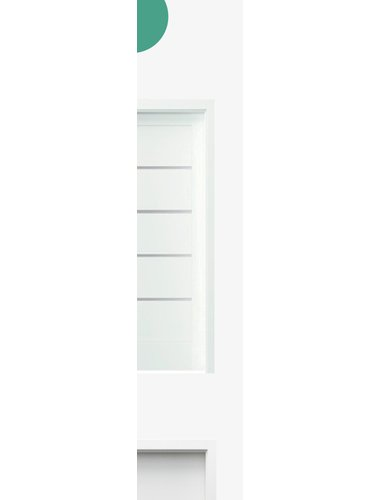

Bezfalcové nebo reverzní dveře s prémiovou hliníkovou zárubní
PORTA DECOR P jsou prémiové dveře s hliníkovou (aluminiovou) zárubní, která je nejmoderněnším a nejelegantnějším řešením v interiéru. Hliníkový rám je odolný, nepraská a nevybouluje se. Dostupné jako bezfalcové i reverzní (otvíra se na obě strany). Ideální do nových bytů a novostaveb s moderním pojetím.
| Parametr | Hodnota |
|---|---|
| Typ závěsu | Bezfalcové nebo reverzní (otvírání na obě strany) |
| Zárubeň | Hliníková (aluminiová) zárubeň – prémiové provedení |
| Povrch křídla | CPL nebo folie – dle vybrané varianty |
| Sklo | Bez skla (plné) nebo se sklem – dle varianty |
| Zámek | BB (klika-klika) nebo WC (záchod) |
| Orientace | Pravé (P) nebo levé (L) – nebo reverzní |
| Výrobne | PORTA, Polsko |
| Dostupnost | Skladem – vybrané varianty |
Kontaktujte nás pro upřesnění variant a nacenění.